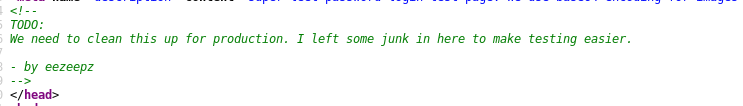

Admin login page at http://192.168.43.125/fristi/
Found a name and base64 encoded string in the page web source. On decoding base64 string got a png file with some letters. Logged in successfully using those as creds.
Username: eezeepz
Password: keKkeKKeKKeKkEkkEk
